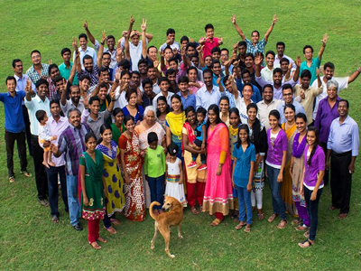

COTR (Church on the Rock Theological Seminary) was founded by Apostle Dr. P.J. Titus as a part of COTR Theological Seminary
of Ministries. Dr. Titus was burdened with God’s vision to work in India and left his reputed job of 18 years in Dallas, United States of America, to serve in God’s vineyard. Dr. Titus decided to start aBible College in India with the aim of training young men and women of faith to become instrumental in establishing God’s Kingdom. The vision brought Dr. Titus and his family to India in 1981, with an aim to give it a shape and structure. After fervent prayers and support of many concurring people around the world, the vision of reaching one billion souls for Christ began with the purchase of land in Bheemunipatnam.
The COTR College of Ministries and New Testament Church of India were registered and began impacting India. Dr. Titus and his wife, Mary, were also concerned with the plight of lost and orphaned children in India. So, in addition to the church and Bible College seminary, he established the Nava Jeevan School and the New Life Children’s Home. Over the years, Dr. Titus looked to expand the scope of the ministry in order to maximize the impact he could make in reaching the spiritually starved. The Bible College ministry campus now incorporates the New Testament Church, Nava Jeevan School, New Life Children’s Home, and Jyothi Hospital.Dr. & Mrs P.J. Titus God placed a heavy burden on the heart of Dr. P.J. Titus for the people of his native land of India.
Dr. Titus had a divine vision to serve the needy fellow humans in India. He and his wife Mary left the United States in 1981 and returned to their home country to establish CHRIST FOR INDIA, the Lord’s ministry. All the years of untiring dedication made Dr. Titus an eminent theologian, a missionary, an evangelist, and world renowned charismatic orator. He took advantage of every opportunity to preach the gospel to his native people and felt that each native person he trained would then go out and instruct others.
He remained focused on his mission to make disciples of one billion people in his native country of India until he entered into his glory in September 2003. When Dr. P. J. Titus was promoted to Glory in 2003, Mrs. Mary Titus then assumed the leadership as cofounder and president in India, and with the help of her family continues to reach India for Christ. The couple’s eldest son, Johnson P. Titus, is serving the Lord full-time in the COTR Theological Seminary ministry in Visakhapatnam, India .
In 2011 Mary Titus handed the leadership and title of President in India to Johnson Titus. Their second son, Jameson P. Titus, serves as President of CHRIST FOR INDIA in the United States and represents CHRIST FOR INDIA through out the world. Their daughter, Jyothi supports the ministry from their home in Dallas, Texas.
